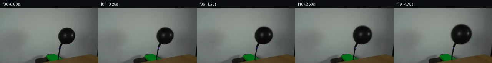
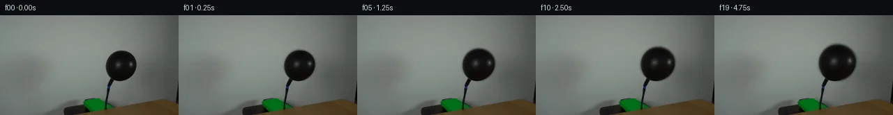
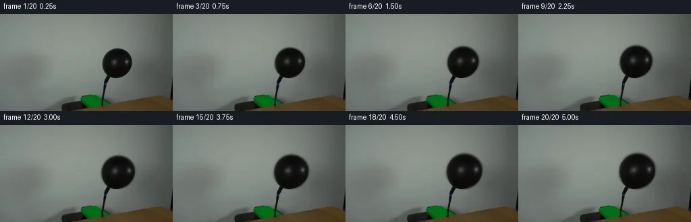
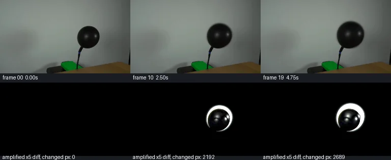

V0 · 初版
2026-11-05T16:07:57.357880+00:00 · RGB 6fa5f5b001cc
![]()
Observable Generation Trace
把最终像素视频、Harness 冻结的每轮候选、真实工具事件和 Agent 自述放在同一页。可观测证据与模型自述分开标记，避免把“模型说它检查过”误当成真实工具调用。
![首帧]()
Static locked-off single-shot with fixed frame throughout filmed with constant framerate in real-time. The scene shows a realistic scientific demonstration. The scene only contains the described setup and actions. The balloon is attached to a black hose that points upwards from behind a wooden table. Air is being pumped into the black balloon.
首帧显示在左侧播放器初始画面。Track 权限、隔离和 tensor 一致性来自 run manifest，而不是 METHOD.md。
默认勾选初版和最终版；可选其他版本一起同步播放。仅检查图更新的连续重复快照已合并，回退旧视频仍保留为一次修订。
Observable events
来源：events.jsonl + run manifest
此 Track 禁止读取输出图片。逐轮预览由外部 Harness 自动冻结，只用于事后审计，生成 Agent 当时看不到这些页面。
Frozen candidates
每张图来自该 round 的真实 00 / 01 / 05 / 10 / 19 帧
pixels 056da8eac575ca96 · code ca835fb139d8427d
--- previous/generate.py +++ current/generate.py @@ -0,0 +1,174 @@ +"""PixelWorld case_0037_attempt_01 — black balloon inflation on a black hose. + +Method (analytic, local pixel operations only): + * frame 00 is an exact copy of first_frame.png; + * the frame-00 balloon body was fitted as an axis-aligned ellipse + C0=(173.0,72.25), rx0=22.25, ry0=21.25; + * the balloon inflates by uniform scaling k about the fixed knot point + A=(160,89), so the center slides up/right and radii grow with k; + * each new balloon pixel is coloured from the same surface normal on the + frame-00 balloon (P0 = A + (P-A)/k, bilinear fetch), carrying the + frame-00 highlight and reflection lobe outward; + * a Gaussian edge feather (sigma_s=0.11 in normalised ellipse-radius + units) reproduces the measured ~2px soft-focus rim; fringe pixels blend + the clamped near-edge interior colour over the untouched wall; + * the knot/hose/blue-band region is copied verbatim from frame 00 into + every frame (rigid hardware in front of/at the balloon neck); + * everything outside the render box is byte-identical to frame 00. +""" +from pathlib import Path +import math +import numpy as np +from PIL import Image, ImageDraw + +import artifact_io + +ROOT = Path(__file__).parent + +# ---- frame-00 geometry (see OBSERVATION.md) ------------------------------- +CX0, CY0, RX0, RY0 = 173.0, 72.25, 22.25, 21.25 +AX, AY = 160.0, 89.0 # fixed knot / inflation point +SIGMA_S = 0.11 # edge feather width in normalised s units +S0_CLAMP = 0.99**2 # fringe samples fetch near-edge interior colour +SS = 4 # supersampling per axis (16 sub-pixels) + +# render box: final ellipse bbox x[148.4,204.2] y[41.1,94.5] + fringe margin +X0, X1, Y0, Y1 = 143, 210, 38, 101 + +# knot + hose + blue band restore polygon (measured spans + ~1px margin) +RESTORE_POLY = [ + (151.5, 132.5), (149.5, 128.5), (150.5, 117.0), (151.5, 107.0), + (152.5, 99.0), (151.5, 95.5), (154.0, 91.5), (156.0, 88.0), + (157.5, 86.5), (168.5, 86.5), (168.5, 95.5), (163.5, 97.5), + (159.0, 100.5), (158.0, 110.0), (157.0, 132.5), +] + + +def erf(x): + """Vectorised erf via the 5-term Abramowitz & Stegun fit (|err|<1.5e-7).""" + ax = np.abs(x) + t = 1.0 / (1.0 + 0.3275911 * ax) + y = 1.0 - (((((1.061405429 * t - 1.453152027) * t) + 1.421413741) * t + - 0.284496736) * t + 0.254829592) * t * np.exp(-ax * ax) + return np.sign(x) * y + + +def scale_at(i): + """Inflation curve with a 1 Hz pump-stroke pulsation.""" + if i == 0: + return 1.0 + t = i / 4.0 + trend = 1.0 + 0.255 * (i / 19.0) ** 0.85 + return trend + 0.0045 * math.sin(2.0 * math.pi * t) + + +def bilinear_fetch(img, fx, fy): + """Vectorised bilinear sampling; fx,fy are float arrays in pixel units.""" + h, w = img.shape[:2] + fx = np.clip(fx, 0, w - 1.001) + fy = np.clip(fy, 0, h - 1.001) + x0 = np.floor(fx).astype(np.int32) + y0 = np.floor(fy).astype(np.int32) + tx = (fx - x0)[..., None] + ty = (fy - y0)[..., None] + p00 = img[y0, x0] + p10 = img[y0, x0 + 1] + p01 = img[y0 + 1, x0] + p11 = img[y0 + 1, x0 + 1] + top = p00 * (1 - tx) + p10 * tx + bot = p01 * (1 - tx) + p11 * tx + return top * (1 - ty) + bot * ty + + +def render_frame(base, i): + k = scale_at(i) + if i == 0: + return base.copy() + … diff truncated; 87 more lines …

pixels 80452a5ab726b3d8 · code 57b12c1e5a31f946
--- previous/generate.py
+++ current/generate.py
@@ -102,6 +102,7 @@
# gaussian coverage: fraction of the (already soft) rubber disk at P
alpha = 0.5 * (1.0 + erf((1.0 - s) / (SIGMA_S * math.sqrt(2))))
+ alpha[s > 1.0 + 4.0 * SIGMA_S] = 0.0 # truncate negligible gaussian tail
# same-surface-normal source point on the frame-00 balloon
sx = AX + (gx - AX) / k
pixels 3b5d35ab3c22ffe2 · code ca6e5b8b8f1f4990
--- previous/generate.py
+++ current/generate.py
@@ -138,7 +138,7 @@
keep = np.array(rmask)[Y0:Y1, X0:X1] > 0
region[keep] = base[Y0:Y1, X0:X1, :][keep]
- out[Y0:Y1, X0:X1, :] = np.clip(region, 0, 255).astype(np.uint8)
+ out[Y0:Y1, X0:X1, :] = np.rint(np.clip(region, 0, 255)).astype(np.uint8)
return out
pixels 3b5d35ab3c22ffe2 · code ca6e5b8b8f1f4990
No generate.py text change in this frozen round.
Final visual checks
Harness 保存的最终产物


Agent claims
以下文字由生成 Agent 撰写，不等同于工具证据
All measurements taken numerically from first_frame.png (256×144 RGB) with
local Python (numpy/PIL). No image viewing tools were used on generated frames.
Locked-off gray-green wall, a wooden table rising from the bottom-right corner, and a black balloon on a black hose that comes up behind the table. A small blue band marks the hose just under the balloon knot. A green block rests on a black rounded object behind the table; the hose runs into that area. A dark sliver of an out-of-frame object clips the far-right edge. Only the balloon moves: air is pumped in, so it inflates. Everything else is static.
Inflation at constant pumping: the balloon grows about a fixed center (the knot stays attached to the rigid hose; at frame 00 the knot meets the sphere's lower-left, and a fixed-center growth keeps that contact valid for the whole shot). Rubber shading is a function of surface normal, so every new pixel is colored from the same normal's location on the frame-00 balloon — highlights and the dim lobe slide outward proportionally with the radii. A faint 1 Hz pulsation represents pump strokes. Growth is monotonic; no background is ever revealed (the balloon only occludes more wall), so no inpainting is needed.
Radii: rx 22.25 → 27.8, ry 21.25 → 26.6 (trend scale 1.000 → 1.255,
~57% area gain). Final bbox x≈145–201, y≈46–99 — clears frame edges, table,
green block and the right sliver; it only grazes the knot region, which is
restored verbatim from frame 00 together with the hose and blue band.
| frame | t (s) | trend k | pulse | total k | event |
|---|---|---|---|---|---|
| 00 | 0.00 | 1.000 | 0 | 1.000 | exact first_frame.png |
| 01 | 0.25 | 1.021 | + | 1.025 | inflation begins |
| 02 | 0.50 | 1.038 | 0 | 1.038 | steady growth |
| 03 | 0.75 | 1.053 | − | 1.049 | |
| 04 | 1.00 | 1.068 | 0 | 1.068 | |
| 05 | 1.25 | 1.082 | + | 1.086 | |
| 06 | 1.50 | 1.096 | 0 | 1.096 | |
| 07 | 1.75 | 1.109 | − | 1.105 | |
| 08 | 2.00 | 1.122 | 0 | 1.122 | ring clearly wider |
| 09 | 2.25 | 1.135 | + | 1.140 | |
| 10 | 2.50 | 1.148 | 0 | 1.148 | |
| 11 | 2.75 | 1.160 | − | 1.156 | |
| 12 | 3.00 | 1.173 | 0 | 1.173 | |
| 13 | 3.25 | 1.185 | + | 1.189 | highlight visibly displaced outward |
| 14 | 3.50 | 1.197 | 0 | 1.197 | |
| 15 | 3.75 | 1.209 | − | 1.204 | |
| 16 | 4.00 | 1.220 | 0 | 1.220 | |
| 17 | 4.25 | 1.232 | + | 1.236 | |
| 18 | 4.50 | 1.244 | 0 | 1.244 | balloon large but fully in frame |
| 19 | 4.75 | 1.255 | − | 1.250 | final, still inflating |
k = 1 + 0.255·(i/19)^0.85 + 0.0045·sin(2π·t) (1 Hz pump stroke; quarter-second
frame phases cycle 0,+,0,−).
Only an annular ring around the growing ellipse (plus its soft fringe) may differ from frame 00. Excluded/restored exactly: knot, hose, blue band, table, green block, black device, wall shadow, right-edge sliver. Numeric checks: changed pixels confined to x∈[140,205], y∈[42,103]; changed count monotone non-decreasing; frame 00 byte-identical to input.
Event: air is pumped into the black balloon attached to the black hose behind the wooden table — a 5 s, 4 fps, locked-off single shot of steady inflation with a faint 1 Hz pump-stroke pulsation.
first_frame.png)Measurements and the frame-by-frame plan are in OBSERVATION.md.
generate.py)Frame 00 is a byte-exact copy of first_frame.png. For each later frame:
k (1.000 →
1.2505) about the fixed knot A, so the center moves as
C = A + k(C₀−A) and radii are k·rx₀, k·ry₀. Scaling about the knot
keeps the sphere silhouette pinned to the rigid neck.
k(i) = 1 + 0.255·(i/19)^0.85 + 0.0045·sin(2π·i/4) — slightly degressive
growth plus a ±0.45 % pump pulse. k is strictly increasing across all
20 frames.P₀ = A + (P−A)/k, bilinearly fetched from frame
00. This carries the highlight and dim lobe outward proportionally; the
measured highlight peak travels (187,70) → (194,65).pixels.npz tensor (uint32 0xRRGGBB, H×W×T) decoded and compared
elementwise against frames/00..19.png: exact match; index.html's
embedded base64 first-frame + 19 RLE deltas decode to the same pixels.first_frame.png.inspection.png is the standard contact sheet; transition_check.png
shows frames 00/10/19 with amplified ×5 difference maps beneath.No external models, engines, references or image-view tools were used; only numpy/PIL pixel math as allowed by the rules.